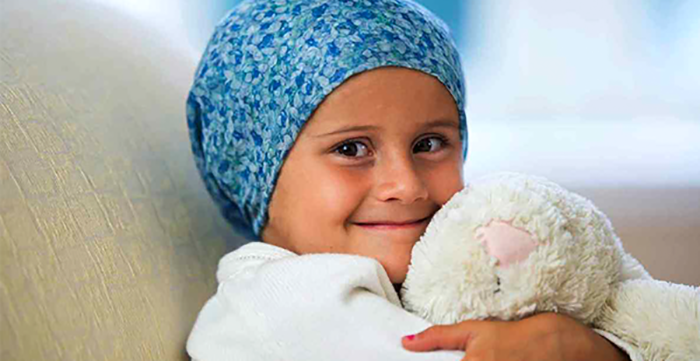
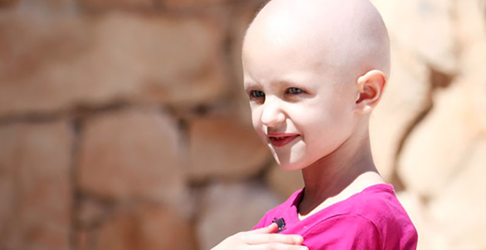
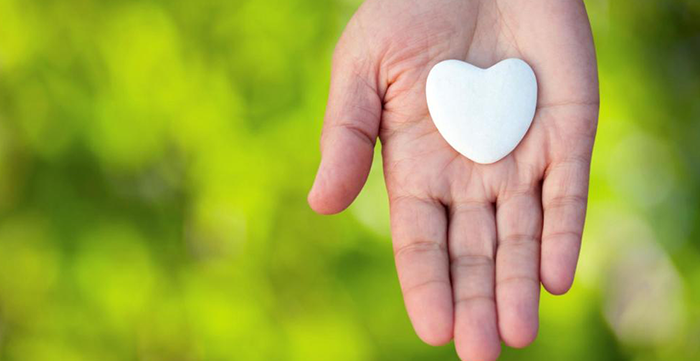
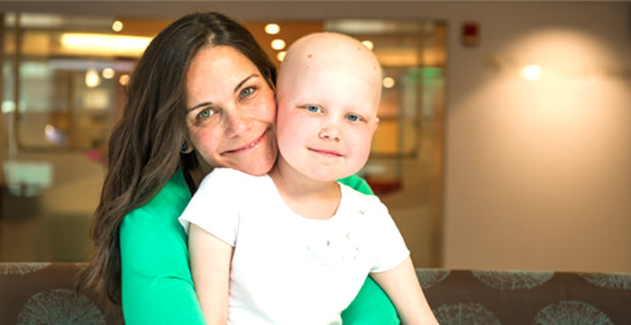
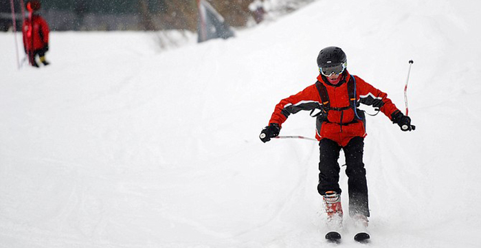
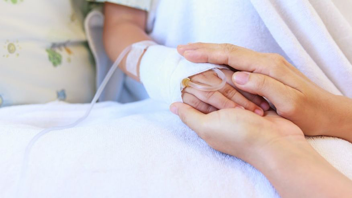
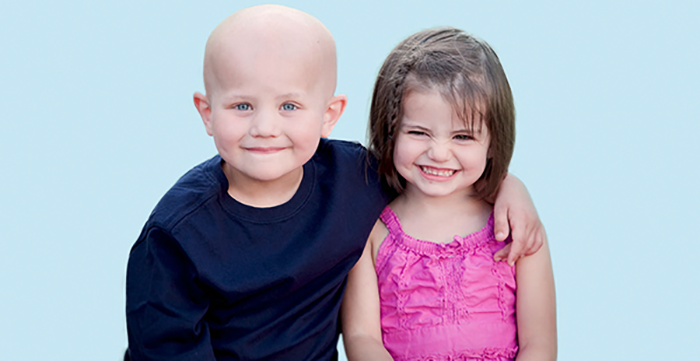

El Voluntariado Hospitalario en Santiago
Escrito por Carolina
Está a cargo de la Presidenta Sra. Soledad Morales.
Este voluntariado trabaja en el Hospital Luis Calvo Mackenna. Su objetivo es acoger a los padres e hijos, brindándoles apoyo y acompañamiento. Las voluntarias informan a los padres cual es la misión que cumplen con los niños del hospital además de difundir los beneficios entregados a todos los niños por la Fundación Niño y Cáncer, tales como: Cena de navidad, Taller de Ski para niños amputados, Encuentro con la Montaña para niños en seguimiento, Campeonato de Futbolito y Porristas.

Campamento por la vida
Escrito por Carolina
Esta vigésima versión se realizó en el balneario "La Floresta" a 50 Km de Montevideo, Uruguay, del 14 al 19 de diciembre de 2015.
Participaron aproximadamente 70 niños con patologías oncológicas de: Argentina (Tucumán y Mendoza), Brasil (Puerto Alegre y San Pablo), Paragua (Asunción), Chile, Venezuela y Honduras.
La experiencia que viven los niños en este campamento es extraordinaria. Regresan con un espíritu renovado, compartir con niños de distintos países que tienen cáncer y leucemia los ayuda a comprender como deben enfrentar la enfermedad.
La Fundación como en años anteriores, financió: pasajes, seguros de viaje, ropa adecuada, entre otras cosas.
Los niños que viajaron representando a Chile en esta oportunidad fueron:
- Matías Gonzalez del Hospital Roberto del Río
- Yaresla Valenzuela del Hospital Sotero del Rio
- Fabiola Angulo del Hospital San Borja Arriaran

Dona aquí
Escrito por Angel
Donaciones de dinero de empresas o particulares
Nuestra institución está facultada para emitir certificados de donaciones constituyendo para el donante un gasto aceptado, deducible de sus impuestos de acuerdo a lo expresado por el D.L. 3.063 de 1979 y la resolución exenta N° 3.239 de fecha 3 de mayo de 1993 de la Dirección Regional Metropolitana Santiago Oriente.

Finalizó período postulación a becas
Escrito por Carolina
El objetivo de este proyecto es beneficiar a jóvenes recuperados de cáncer con becas académicas, para lograr la continuidad de estudios pendientes y obtener una profesión futura y reinserción en la sociedad.
Las becas podrán atender a los jóvenes con estudios universitarios, técnicos profesionales o de centros de formación técnica. Así también podrán tener alcances parciales y en ocasiones especiales, totales.
El año 2018 se otorgaron un total de 28 becas de las cuales 15 corresponden alumnos antiguos y 13 son para alumnos que inician sus estudios superiores este año 2018.
Para que estas becas sean bien utilizadas, sean objetivas y sean supervisadas, elaboramos requisitos básicos y similares a los utilizados en el resto de las instituciones que entregan estos beneficios.
Ver instructivo de postulación 2018 (formato PDF)
Para mayor información o en caso de cualquier duda, consultar a:
Carolina Escudero P.
Asistente del Directorio
Fundación Niño y Cáncer
fundacion@ninoycancer.cl
Fono: 22170821- 22170820

Montaña de la Alegría 2017
Escrito por Alexis
Proyecto recreativo y psicoterapéutico que se realiza desde el año 2002.
Se traduce en "Una Terapia para el Alma".
Se realizó como todos los años en Portillo del 21 al 25 de agosto y contó con la participación de 7 jóvenes chilenos, 2 ecuatorianos y 1 de España. Todos amputados de una extremidad inferior, como secuela de su enfermedad.
El objetivo de este Programa es demostrar a los participantes, que su impedimento físico no los limita para plantearse y superar desafíos, tales como el aprender a esquiar y que con optimismo y fuerza lograrán todos los objetivos que se propongan en su vida.
El coordinador responsable y voluntario de la FNyC es Patricio Morandé, instructor de ski, que también sufrió una amputación producto del cáncer siendo muy joven. Participó en las Olimpiadas para Discapacitados organizadas en Salt Lake City (EE.UU.) el año 2002, en la que obtuvo el puesto N°11.
Fueron acompañados durante los 5 días que permanecieron en Portillo, por la Voluntaria de la FNyC y sonrisóloga Susana Alegría, Psicóloga.
La Fundación Niño y Cáncer cubrió todos los gastos: alojamiento, alimentación, instructores de ski, traslados, equipos especiales y vestimenta adecuada (ropa térmica, antiparras, cascos, guantes, botas, entre otros).

Libro: "Con tu apoyo, yo le gano al cáncer"
Escrito por Juan Pablo
Ex paciente publica su libro: "Con tu apoyo, yo le gano al cáncer".
¡Hola! Mi nombre es Marlene Zavala, tuve retinoblastoma bilateral, ya hace muchos años. Por esta razón realicé mi proyecto de título sobre el cáncer infantil, para de alguna forma apoyar a los niños que se encuentran atravesando por la enfermedad con un pequeño grano de arena para ellos y sus familias, para de esta forma devolver la mano y agradecer a todos los que estuvieron a mi lado.
Descárgalo aquí

Comienza tu campaña
Escrito por Andrea
Experimenta el poder de la mágia y expande tu campaña desde ya.
Si ya eres donante y quieres motivar a tu círculo de amigos a donar, desde ya puedes expandir tu motivación y compartir tu mensaje con tu red de amigos y familia para darle a los niños de la Fundación Niño y Cáncer, mas oportunidades, fuerza y apoyo para enfrentar el desafío que día a día los acompaña.
Comienza tu campaña hoy, haciendote fan en redes sociales y invitando a tus amigos a ser fans en Facebook de Fundación Niño y Cáncer aquí.